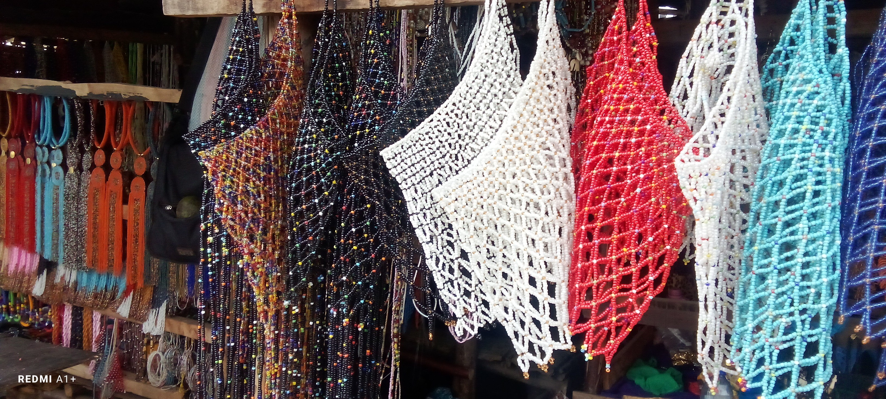
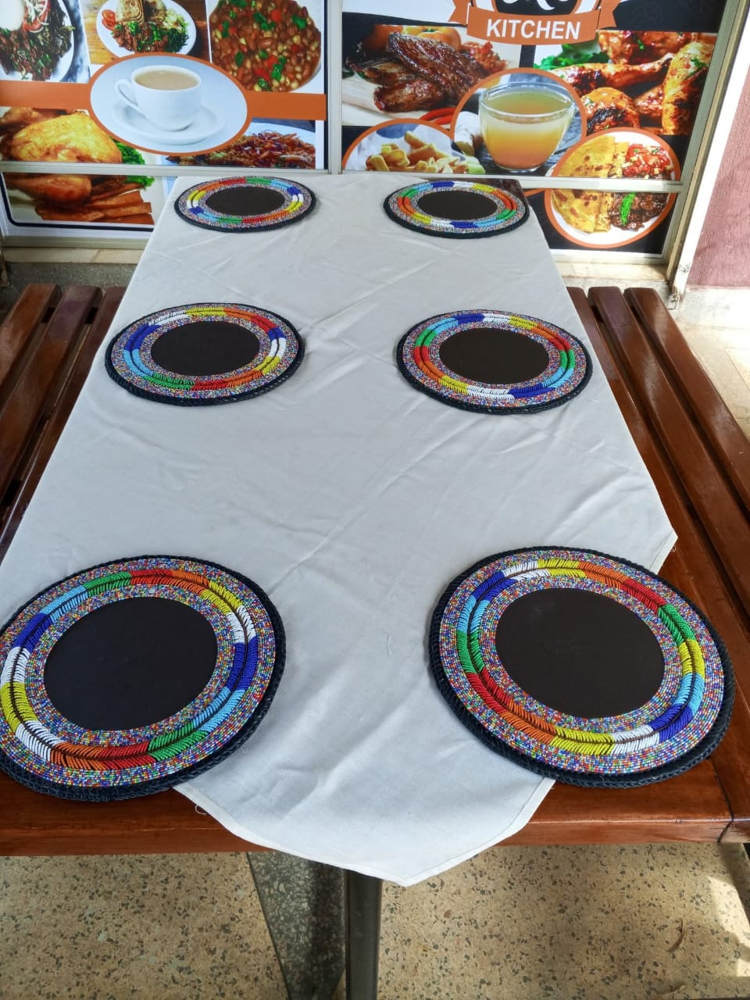

Craft First
Each piece keeps the handmade texture and bright bead detail that make African craft feel personal and alive.
SharonCraft celebrates African beadwork in a way that feels warm, clean, and easy for modern clients to shop. The goal is simple: make beautiful handmade work easier to discover, gift, and enjoy at home.
Our pieces are inspired by market color, ceremonial styling, family celebrations, and the pride of Kenyan craftsmanship. We keep the language simple, the ordering process friendly, and the design bright enough to feel alive.


Each piece keeps the handmade texture and bright bead detail that make African craft feel personal and alive.
The website, product pages, and CTAs are written in clear English so shopping feels easy for every customer.
The catalog is organized to grow with the business, so new products and collections can be added smoothly over time.
The SharonCraft look takes inspiration from market displays, event bead sets, home pieces, and the joyful use of color seen across East African creative spaces. The mood is modern, but the heart stays rooted in craft traditions.


